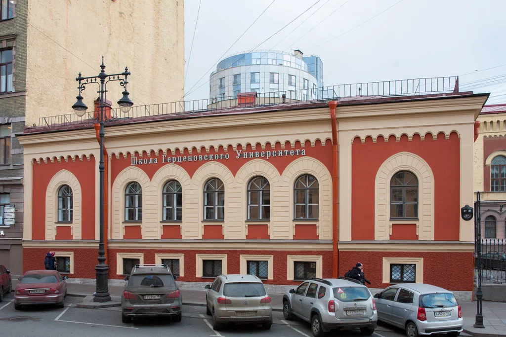

About Our School
The school is housed in a historic building located in the heart of the city on Bolshaya Morskaya Street. It specializes in the education of children in grades 1 to 5, in addition to offering preparatory groups for children aged 5 to 6, where, in an engaging manner, they are introduced to the fundamentals of school life.
Every effort is made to create optimal conditions for the full development of young students, fostering their creative potential and the unique abilities of each child. A wide range of fascinating subjects is offered to every pupil, including painting, sculpting, construction, design, choir, and dance. In collaboration with the Central City Children's Library named after Pushkin, the school runs a unique program, “Fundamentals of Information Culture,” which broadens the students' horizons and shapes their worldview.
Explore Our Programs
Additionally, the school offers a well-established cultural-entertainment course in Russian as a Foreign Language (RFL) for non-native and bilingual students of any level (from beginner to advanced), with the prospect of achieving stable bilingualism and transitioning to the Russian curriculum for those wishing to study in accordance with the plans of the St. Petersburg education standard.

Unforgettable thematic weeks and festivals celebrating world cultures (such as the Indian Diwali, Thanksgiving Day, Maslenitsa and Easter celebrations, St. Nicholas Day, Tsarskoye Selo Lyceum Day, and the Pushkin-era Lyceum Week, among others), as well as recitation contests and "Minute of Glory" performances, foster a multicultural educational environment. Live communication with native speakers of European and Eastern languages creates an atmosphere of joy while maintaining and enhancing the students' interest in learning.

A strong emphasis is placed on the study of foreign languages. By the 3rd grade, many students earn Cambridge English certificates (Movers and Flyers).

Sports activities take place in a well-equipped gymnasium.
The educational process is conducted under the constant supervision of the school's psychological service.
After-school care groups and speech therapists are also available.